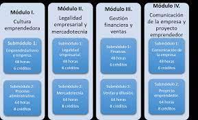
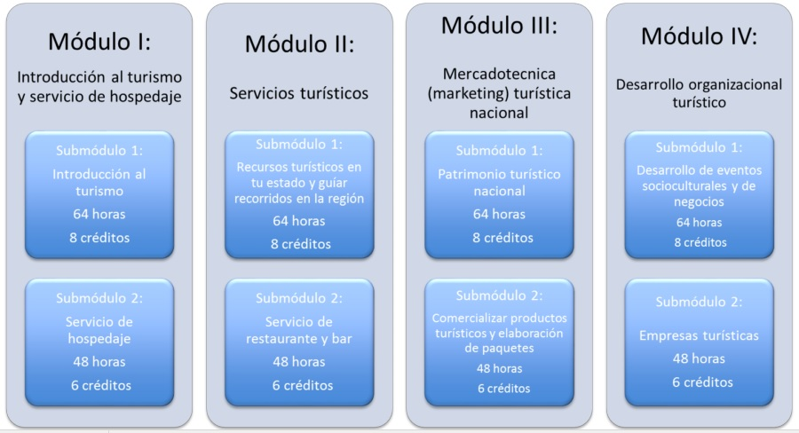

La capacitación de Administración ofrece las competencias profesionales que permiten al estudiante realizar funciones administrativas de carácter operativo, de manera autónoma, crítica y ética, según el grado de complejidad técnica de sus actividades, con una actitud de responsabilidad en su ambiente de trabajo,

Contabilidad
le permite al estudiantado identificar y aplicar el conocimiento de la empresa y las organizaciones, las técnicas contables y de costos, las obligaciones fiscales para el desarrollo y gestión de una empresa, tomando en cuenta su entorno y el uso eficiente de sus recursos.
Servicios de Turismo en Inglés
tiene por objetivo contribuir a que los visitantes nacionales e internacionales en el estado reciban productos y servicios turísticos de mayor calidad, a través de la implementación de acciones de capacitación a los prestadores de servicios turísticos.
Turismo tiene como objetivo formar personas especializadas, tanto como el sector público como para el privado en hotelería, alimentos y bebidas, áreas de servicios, mantenimiento y guía de turistas

Tecnologías de la información y comunicación
A lo largo de los temas de la asignatura, el alumno conoce la arquitectura básica de los sistemas informáticos, aprende a manejar programas informáticos destinados a la edición de hojas de cálculo, procesadores de texto, editores de imagen, vídeo y creación de presentaciones.
Comunicación
La capacitación de Comunicación ofrece las competencias profesionales que permiten al estudiante desarrollar conocimientos, habilidades y actitudes necesarios para
generar la comunicación de la empresa y producir medios de comunicación considerando las leyes que la rigen, y aplicarlos en el campo laboral a través de actividades como
el diseño de campañas publicitarias, guiones radiofónicos, cortometrajes y programas televisivos, utilizando los nuevos procedimientos tecnológicos, de manera autónoma,
crítica y ética, con una actitud de responsabilidad en su ambiente de trabajo, una convivencia basada en valores, un desarrollo personal y social armónico, y una actualización
conforme a necesidades específicas de su formación profesional.